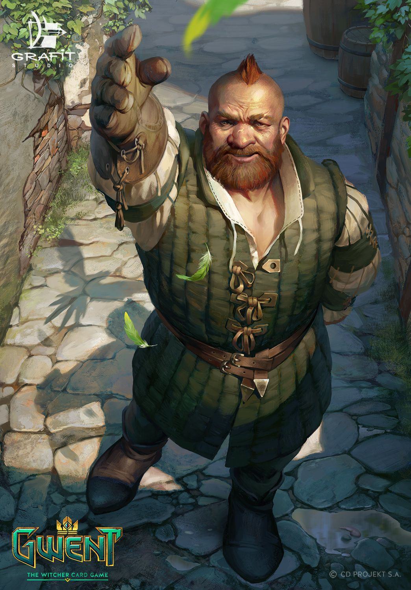

“There's a grain of truth in every fairy tale,”
|
Geralt |
Yennefer |
Ciri |
Dandelion |
Triss |
|
Geralt of Rivia is a witcher and the main protagonist of the Witcher series by Andrzej Sapkowski and its adaptations, including The Witcher, The Witcher 2: Assassins of Kings, and The Witcher 3: Wild Hunt video games. Like all witchers, Geralt is a monster hunter for hire. He possesses superhuman abilities and is a master swordsman. During the Trial of the Grasses, Geralt exhibited unusual tolerance for the mutagens that grant witchers their abilities. Accordingly, Geralt was subjected to further experimental mutagens which rendered his hair white and may have given him greater speed, strength, and stamina than his fellow witchers. Yennefer, born on Belleteyn in 1173,[3] was a sorceress who lived in Vengerberg, the capital city of Aedirn. She was Geralt of Rivia's true love and a mother figure to Ciri, whom she viewed like a daughter to the point that she did everything she could to rescue the girl and keep her from harm. She was a former royal advisor to King Demavend of Aedirn, a close friend of Triss Merigold, and the youngest member of the Supreme Council of Sorcerers within the Brotherhood of Sorcerers. After its fall, the Lodge of Sorceresses attempted to recruit her, but they didn't see eye to eye as the Lodge wanted to advance their own political agenda by using Ciri. Cirilla Fiona Elen Riannon (better known as Ciri), was born in 1253,[3] and most likely during the Belleteyn holiday.[4] She was the sole princess of Cintra, the daughter of Pavetta and Emhyr var Emreis (who was using the alias "Duny" at the time) as well as Queen Calanthe's granddaughter. After Geralt of Rivia helped lift Duny's curse, Duny asked what reward the witcher would like and Geralt proclaimed the Law of Surprise, as it turned out Pavetta was pregnant with Ciri, unbeknownst to Duny. Julian Alfred Pankratz, Viscount de Lettenhove, better known as Dandelion, was a poet, minstrel, bard, and close friend of Geralt of Rivia. He studied at Oxenfurt where his favorite subject was geography due to the fact that the books for that class were large enough that he could hide vodka behind them. Triss Merigold of Maribor was a legendary Temerian sorceress of the 13th century. Called Fourteenth of the Hill by her contemporaries because she was erroneously thought to have been killed during the Battle of Sodden Hill, she passed into history as Merigold the Fearless. A member of King Foltest's royal council along with Fercart and Keira Metz, as well as a founding member of the Lodge of Sorceresses, she was involved in politics for most of her life. She was friends with Yennefer and the witcher Geralt of Rivia, but also unhappily in love with the latter.[1] Triss took care of Ciri at Kaer Morhen for some time and is like an older sister to her. It was through her intervention that Ciri was not subjected to harmful hormone changes at Kaer Morhen, stripping her of her secondary gender traits. She was a skilled healer and carried with her many magical potions, but she never uses them on herself because ironically, she was allergic to potions. She was also quite a powerful mage, certainly when it counted most. She wore an amulet - sapphire overlaid with silver. |
||||
|

Zoltan Chivay |
King Foltest |
Emhyr var Emreis |
Vesemir |
Milva |
|
Zoltan Chivay was a veteran of the Second Nilfgaard War and a friend of Geralt. They first met when Geralt and his company were going towards the Yaruga river from Brokilon, but the dwarf advised them to join his company and go eastwards. It is from Zoltan that Geralt got his sword - Sihil. He also had a talking parrot, Field Marshal Windbag, which he sold to the gnome Percival Schuttenbach when he started a jeweler's workshop in Novigrad. After the Battle of Brenna, Zoltan got engaged to Eudora Breckenriggs. Foltest was the king of Temeria, prince of Sodden, sovereign of Pontaria and Mahakam as well as the senior protector of Brugge and Ellander. He was the son of King Medell and Queen Sancia of Sodden, making him a member of the Temerian Dynasty. Sancia's royal connection with Sodden turned the principality into a vassal state and Ekkehard began paying tribute to Temeria after the death of Gutram. The king's Royal Council included the sorceresses Triss Merigold and Keira Metz, as well as Fercart of Cidaris, Willemer the priest, Bronibor and Hereward of Ellander. Emhyr var Emreis, Deithwen Addan yn Carn aep Morvudd (Nilfgaardian dialect:The White Flame Dancing on the Barrows of his Enemies), also known to a few under his alias as Duny, the Urcheon of Erlenwald (Polish: Jeż z Erlenwaldu) was Emperor of the Nilfgaardian Empire, Lord of Metinna, Ebbing, Gemmera, and Sovereign of Nazair and Vicovaro from 1257 until his death sometime in the late 13th century. He also became the King of Cintra after marrying Cirilla in 1268. His rule of Nilfgaard was highly aggressive, often pursuing expansionist policies similar to those of his predecessors. This led to the outbreak of two wars against the Northern Kingdoms, both of which he lost. Emhyr var Emreis was an intelligent and brilliant ruler. He chose his people well and crushed many plots against him. He was ruthless toward traitors and moved towards his goals with great determination. He was publicly favorable to the Elder Race, in stark contrast to monarchs of the North. Vesemir was the oldest and most experienced witcher at Kaer Morhen in the 13th century and acted as a father figure to Geralt and the other witchers. Like many of the other witchers, he spent each winter in the fortress and set out on the path when spring arrived. He is the only one of the old witchers to survive the assault on Kaer Morhen, left for dead among the corpses of his fellows. However, as he was only a fencing instructor, he didn't possess the knowledge necessary to create new mutagens in order to mutate more boys into witchers. Maria Barring (d. 1268), better known as Milva (Elder Speech: red kite) by the dryads and Sor'ca (Little sister) by the elves, was an archer from Upper Sodden and one of the few non-dryads tolerated in Brokilon. Eithné was said to be rather fond of her. She led four fictional crusades against the dryads in the hope of reducing the number of volunteers for their expeditions but when her true part in this was discovered, she vanished. She later joined Geralt's company in the witcher's search for Ciri. |
||||
|
Cahir |
Regis |
Vilgefortz |
Leo Bonhart |
Eredin |
|
Cahir Mawr Dyffryn aep Ceallach (d. 1268), or simply Cahir, was an intelligence officer of the Nilfgaardian Empire who hailed from Vicovaro and was the son of Ceallach and Mawr. He eventually joined Geralt's company in their quest to find and rescue Ciri. Emiel Regis Rohellec Terzieff-Godefroy, better known simply as Regis, was a very powerful higher vampire, and more than four hundred years old when he first met Geralt of Rivia. He was the barber-surgeon of Dillingen but surprisingly intellectual for one in such a profession. Vilgefortz of Roggeveen (d. 1268) was a mage and a member of the Chapter of Sorcerers, described by Yennefer as "young" (which, among mages, meant "up to one hundred years"), but "incredibly talented". He was also described as being very handsome, tall, well built and possessing a lovely voice. Leo Bonhart (d. 1268) was a bounty hunter and previously a professional soldier from Ebbing. Known for his professionalism and expense to hire, he found pleasure in watching brutal scenes and inflicting pain on others. He was described as very tall but ghoulishly thin, with a prodigious grey moustache. He was said to have cold, expressionless eyes which were often likened to fish. He possessed three witcher medallions, depicting the heads of a wolf (School of the Wolf), a cat (School of the Cat) and a griffin (School of the Griffin), and claimed to have killed their previous owners. A claim which was not necessarily in doubt, given his prowess with a sword. Eredin Bréacc Glas, also dubbed "Sparrowhawk" by the unicorns, was an Aen Elle elf and commander of an elven cavalry known as the Wild Hunt. As its leader, he was known to most as the King of the Wild Hunt. Eredin was a high ranking general in his world until he killed the king and became his successor. |
||||
|
Philippa Eilhart |
Avallac'h |
Vernon Roche |
Iorweth |
|
|
Philippa Eilhart (Polish: Filippa Eilhart) was King Vizimir's advisor and remained in Redania's court even after his death, for which she was likely responsible. She was one of the few sorceresses able to polymorph. She led the Thanedd coup against the Brotherhood of Sorcerers, intending to neutralize suspected traitors allied with Nilfgaard. Later, she helped found the Lodge of Sorceresses and is considered its leader. Crevan Espane aep Caomhan Macha, also known as Avallac'h (pronounced "Ah-vah-lahk"), was an elf and Aen Saevherne who had the ability of traveling between the worlds of the Aen Elle and Aen Seidhe. He met Geralt and told the witcher about a prophecy connected with Ciri. He was nicknamed 'Fox' by the unicorns. Lara Dorren originally intended to marry him, before she fell in love with Cregennan of Lod. He was the one who brought Ciri to the Aen Elle king Auberon, promising Ciri that she would be allowed to return to her world, if she conceived a child with the king. Eredin however claimed that Avallac'h was lying. Vernon Roche is the commander of the Blue Stripes, special forces of the Temerian military, who helps Geralt in The Witcher 2: Assassins of Kings. Being Temerian he holds his king, Foltest, in high regard. He is also a capable fighter. Iorweth was an Aen Seidhe elf, a well-known hater of humans, responsible for burning many human villages and civilian deaths, and was the commander of the last Scoia'tael commando to be broken during the second war with Nilfgaard. He was not just an extremely skilled bowman but a swordsman as well. He defeated the commanders of many special forces of the North, including someone from the Order of the Flaming Rose, except for the Blue Stripes captain Vernon Roche. His other skills included playing the flute (or, more precisely, the recorder). Even though he was always extremely proud of his race, Iorweth's clothes were a combination of elven and human clothing. He didn't acquire them all at once but rather stack it up with useful pieces from armors of humans he killed. Iorweth and Isengrim Faoiltiarna were supposedly the only two who survived the massacre of the Vrihedd Brigade at the Ravine of the Hydra, following the peace of Cintra. |